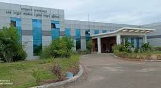
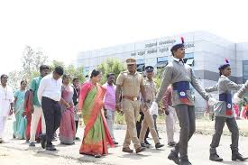
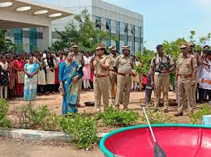
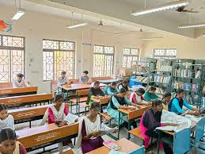
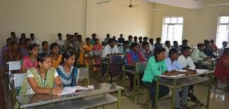
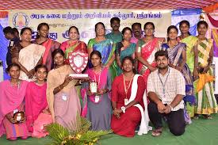

OUR COLLEGE... CULTURE & KNOWLEDGE NURTURED TOGETHER...
Srirangam is meant for its heritage, culture, history and religion in which Government Arts and Science College, Srirangam (TK), affiliated to Bharathidasan University, Tiruchirappalli, locates since 2011.
College Activities



Education at College


